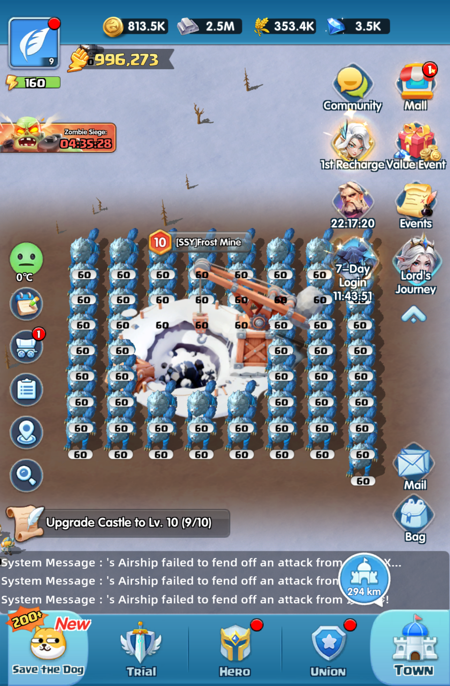
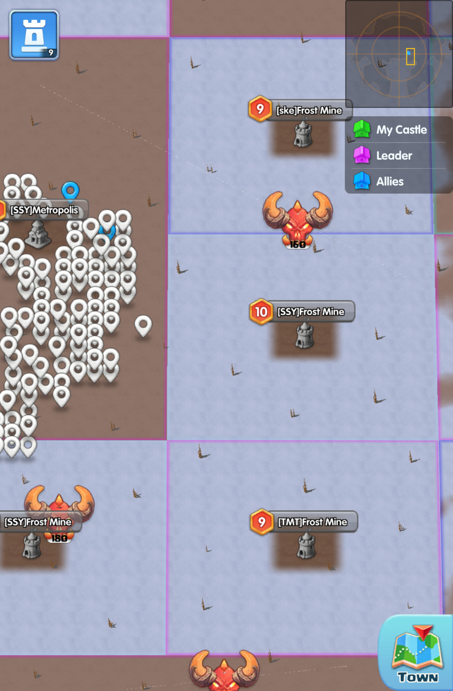

Introducing: The New Square Levels
隆重介紹：全新的方形關卡
One of the most noticeable differences in Season 1 is the introduction of the new square levels. These distinct, perfectly squared resource and challenge nodes replace the organic, scattered nodes of the pre-season map. This makes identifying high-value targets and organizing alliance territory much more strategic.
第一賽季最顯著的變化之一是引入了全新的方形關卡。這些獨特、完美的方形資源和挑戰節點取代了季前賽地圖中有機、分散的節點。這使得識別高價值目標和組織聯盟領地變得更具戰略性。
Level Progression Expanded: The pre-season map had a limited tier of nodes. Season 1 pushes the boundaries by adding 1 more Level 6 node type to the mid-game progression, bridging the gap to the ultimate end-game nodes like the massive Level 10 squares!
關卡進度擴展： 季前賽地圖的節點層級有限。第一賽季突破了界限，在中期進度中增加了1 個額外的 6 級節點類型，彌合了通往巨大 10 級方形等最終遊戲節點的差距！

A massive Level 10 Square Node. Notice the distinct borders and imposing structure compared to normal map nodes.
巨大的 10 級方形節點。請注意與普通地圖節點相比，其獨特的邊界和宏偉的結構。

Zooming out reveals how these high-level squares dominate their local regions, serving as major contest points.
縮小視角可以發現這些高級方形如何主導其所在區域，成為主要的爭奪點。